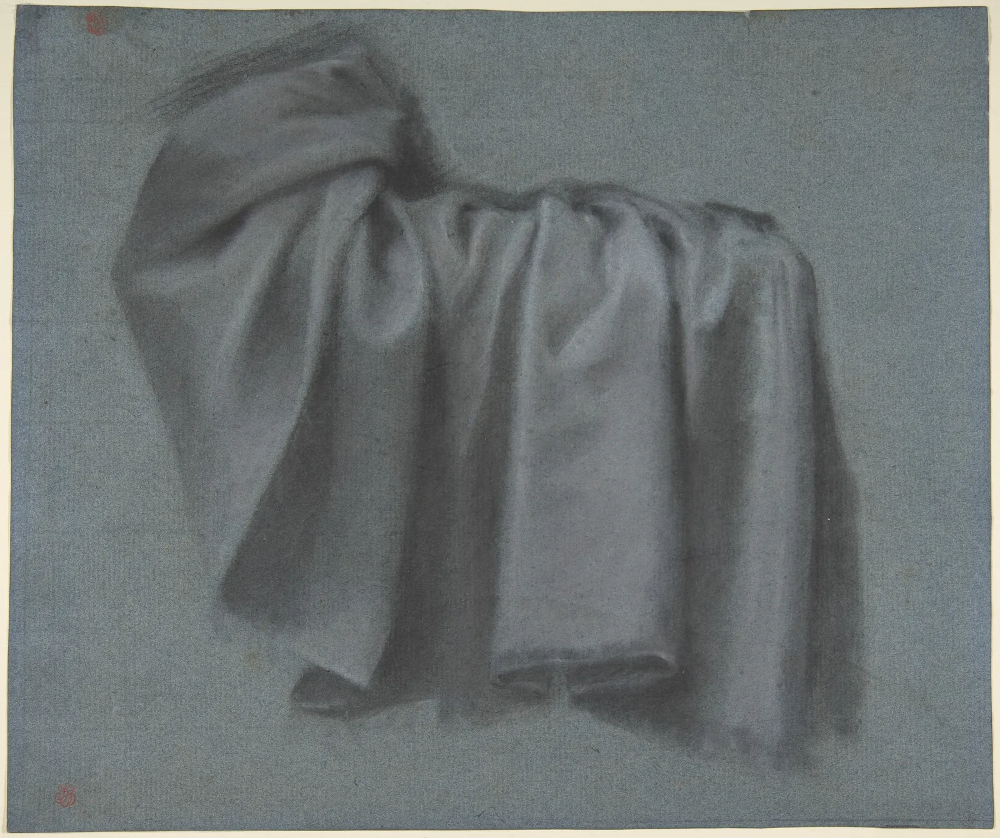
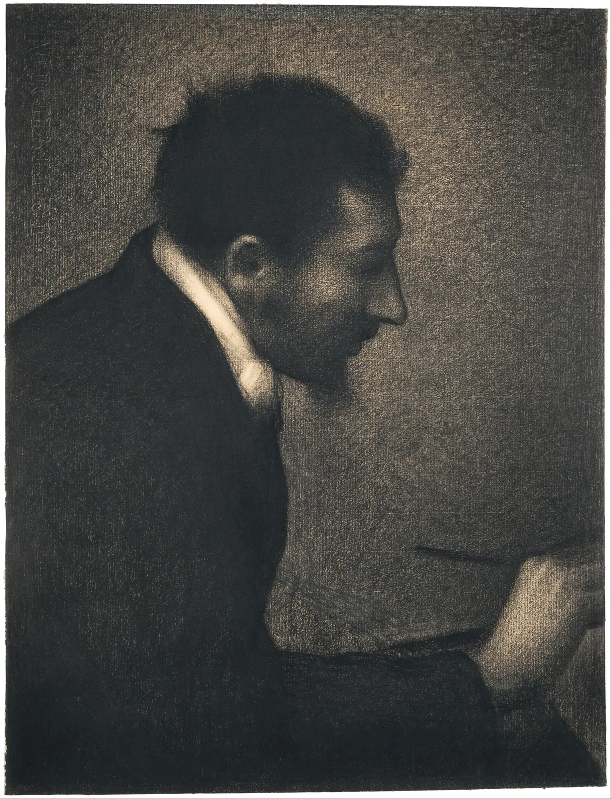

명암의 단계
책상 위에 흰 달걀 하나를 올려놓고 스탠드를 켜 보자. 달걀은 흰색 하나인데, 눈에 들어오는 것은 거의 흰빛에 가까운 반짝임부터 숯처럼 짙은 띠까지 여러 겹의 회색이다. 더 이상한 것은 가장 어두운 곳이 달걀의 가장자리가 아니라 그보다 조금 안쪽에 있다는 점이다. 이 장은 빛이 둥근 형태 위에 남기는 명암의 질서를 하나씩 이름 붙여 보고, 그 질서가 왜 생기는지를 빛을 직접 옮겨 가며 확인한다. 마지막에는 그 연속된 명암을 펜 한 자루로 그릴 수 있는 다섯 단계로 나누는 법을 익힌다.
- 하이라이트·밝은 면·중간톤·명암 경계·반사광·접촉 그림자·투영 그림자를 구 위에서 구별한다.
- 면이 빛을 비스듬히 받을수록 어두워지는 람베르트의 코사인 법칙을 직관으로 이해한다.
- 가장 어두운 곳이 명암 경계 바로 안쪽에 생기는 이유와 반사광이 밝은 면을 넘지 않는 이유를 설명한다.
- 연속된 명암을 빛의 무리와 그림자의 무리로 나누고, 다섯 단계 해칭으로 배분한다.
- 공공 도메인 소묘에서 명암 단계가 쓰인 방식을 읽고, 명암을 쓰지 않는 전통도 함께 본다.
달걀 하나의 빛
7장에서 우리는 선만으로 덩어리를 세웠다. 단면선이 표면의 굴곡을 알려 주었지만, 그 덩어리가 어디서 오는 빛을 받고 있는지는 아무것도 말해 주지 않았다. 빛은 형태를 드러내는 또 하나의 길이다. 한 방향에서 오는 빛 아래 놓인 둥근 물체는 거의 언제나 같은 순서의 명암을 보인다. 화가들은 오래전부터 이 순서에 이름을 붙여 왔다. 이름은 교재마다 조금씩 다르지만, 이 책은 다음 일곱 가지로 부른다.
이 가운데 ①~③은 빛이 직접 닿는 쪽, ④~⑦은 직접 닿지 않는 쪽에 있다. 둘 사이를 가르는 선이 명암 경계(Terminator, Core shadow)다. 영어권 교재는 경계선 자체를 터미네이터, 그 안쪽의 가장 어두운 띠를 코어 섀도라고 나눠 부르기도 한다. 물체 자신의 몸에 생기는 그림자(④⑤)를 고유 그림자(Form shadow), 다른 곳에 드리우는 그림자(⑦)를 투영 그림자(Cast shadow)라고 구별하는 것도 중요하다. 둘은 생기는 이유도, 가장자리의 모양도 다르다.
이제 빛을 직접 옮겨 본다. 오른쪽 위의 작은 원판은 탁자를 위에서 내려다본 지도다. 원판 위의 해를 끌면 빛의 방향이 바뀐다. 해가 원판 가운데에 가까울수록 높이 떠 있고(머리 위), 가장자리일수록 낮게 깔린다. 원판의 아래쪽은 그림을 보는 사람 쪽이다.
구에 빛 옮기기
빛이 어디서 오든 명암의 순서는 그대로다. 하이라이트는 언제나 밝은 면 안에, 명암 경계는 밝은 면과 그림자 사이에, 반사광은 그림자 안에, 투영 그림자는 빛의 반대편에 생긴다. 달라지는 것은 각 영역의 넓이와 자리뿐이다. 그래서 명암을 그리는 일은 회색을 하나하나 베끼는 일이 아니라, 빛의 방향을 정하고 그 방향이 만드는 순서를 형태 위에 배치하는 일이다.
빛을 비스듬히 받으면
밝은 면에서 명암 경계로 갈수록 왜 점점 어두워질까. 답은 빛을 받는 각도에 있다. 손전등을 벽에 정면으로 비추면 작고 밝은 원이 생기고, 비스듬히 비추면 같은 빛이 길쭉하게 퍼지며 흐려진다. 빛의 양은 같은데 받는 넓이가 넓어졌기 때문이다. 둥근 물체의 표면은 곳곳에서 빛을 서로 다른 각도로 받는다. 빛을 정면으로 받는 곳은 빛줄기가 촘촘하게 떨어지고, 비스듬한 곳일수록 성기게 떨어진다.
아래 판은 평행한 빛줄기와 판자 하나를 옆에서 본 그림이다. 판자 끝의 손잡이를 끌거나 슬라이더로 판자를 기울인다. 판자에 떨어지는 빛줄기의 수와 그 결과로 생기는 판자의 밝기를 본다.
비스듬할수록 성기게 떨어지는 빛
판자가 기울어지는 만큼 빛줄기의 간격이 벌어지고, 받는 빛은 기울기의 코사인에 비례해 줄어든다. 18세기 스위스 출신의 수학자 요한 하인리히 람베르트(Johann Heinrich Lambert)가 1760년의 책 『광도 측정』(Photometria)에서 정리한 관계라서 람베르트의 코사인 법칙(Lambert's cosine law)이라고 부른다. 종이, 석고, 무광 도자기처럼 빛을 사방으로 고르게 흩뜨리는 표면은 어느 방향에서 보아도 같은 밝기로 보이고, 그 밝기는 빛을 받는 각도만으로 정해진다.
이 식을 구에 적용하면 일곱 가지 명암 가운데 세 가지가 저절로 나온다. 빛을 정면으로 받는 곳(θ = 0°)이 밝은 면, 거기서 멀어질수록 cos θ가 줄어드는 넓은 띠가 중간톤, cos θ가 0이 되는 선이 명암 경계다. 명암 경계가 매끈한 곡선이 아니라 형태의 굴곡을 따라 들쭉날쭉해진다는 것도 이 식에서 나온다. 면의 기울기가 조금만 바뀌어도 θ가 90°를 넘나들기 때문이다. 그래서 명암 경계는 형태를 가장 예민하게 드러내는 선이다.
명암 경계와 반사광
이제 그림자 쪽을 본다. 직접광이 닿지 않으니 그림자 쪽은 완전히 깜깜해야 할 것 같지만, 실제로는 바닥·벽·주변 물건에서 되튄 빛이 그림자 안으로 들어온다. 이 빛이 반사광(Reflected light)이다. 반사광은 그림자 쪽 가운데서도 바닥이나 밝은 벽을 마주한 곳에 가장 많이 들어온다. 반대로 명암 경계 바로 안쪽은 직접광은 이미 끊겼는데 바닥을 아직 충분히 마주하지 않아 반사광도 적게 받는다. 그래서 그곳이 가장 어둡다. 화가들이 "명암 경계가 가장 짙다"고 말하는 까닭이다.
아래 시뮬레이터 아래쪽 그래프는 구의 한가운데를 가로로 지나며 잰 명도다. 바닥의 반사율과 빛의 크기를 바꾸고, 그림자 쪽에 흰 반사판을 세워 본다.
가장 어두운 곳은 경계 바로 안쪽
반사광은 그림자를 살아 있게 만들지만, 너무 밝게 그리면 형태가 무너진다. 실제 장면에서 반사광은 대개 밝은 면은 물론 중간톤보다도 어둡다. 반사광은 이미 한 번 바닥에서 흩어지며 약해진 빛이기 때문이다. 시뮬레이터에서 반사판까지 세워 억지로 밝혀도 반사광이 밝은 면을 넘지는 못했다. 반사광은 그림자의 무리 안에서만 밝다.
접촉 그림자와 투영 그림자
물체가 바닥에 드리우는 투영 그림자는 물체의 무게와 자리를 알려 준다. 투영 그림자가 없으면 물체는 바닥 위에 떠 보이고, 그림자가 물체와 떨어져 있으면 물체가 공중에 떠 있는 것처럼 보인다. 투영 그림자 가운데서도 물체가 바닥에 닿는 바로 그 자리는 특별히 짙다. 이곳을 접촉 그림자(Contact shadow, Occlusion shadow)라고 부른다. 직접광뿐 아니라 하늘빛과 반사광까지 물체가 거의 다 가려 버리기 때문이다.
투영 그림자의 정확한 모양과 길이를 기하학으로 그리는 방법은 9장에서 자세히 다룬다. 여기서는 명암의 단계 안에서 투영 그림자가 어떤 자리를 차지하는지만 본다. 물체를 고르고 빛의 고도를 바꿔 본다.
접촉 그림자는 가장 짙고, 그림자 끝은 흐리다
투영 그림자는 대개 물체의 고유 그림자보다 짙다. 고유 그림자에는 바닥에서 되튄 반사광이 들어오지만, 투영 그림자가 드리운 바닥은 바로 위에 물체가 있어 하늘빛과 주변 빛의 일부를 가려 버리기 때문이다. 특히 물체 바로 아래의 접촉 그림자는 장면 전체에서 가장 어두운 곳이 되기 쉽다. 그래서 명암을 단계로 나눌 때 접촉 그림자는 명암 경계와 함께 가장 짙은 단계에 넣는다.
빛의 무리와 그림자의 무리
지금까지 본 일곱 가지 명암은 실제로는 끊김 없이 이어진 회색이다. 연필로 문지르거나 물감으로 번지게 칠하면 그 연속을 그대로 흉내 낼 수 있다. 그러나 펜 한 자루로 그리는 드로잉은 다르다. 펜 선은 진하기가 하나뿐이라서 명암을 3장에서 본 해칭의 밀도, 곧 몇 개의 단계로 나눠야 한다. 이때 가장 중요한 규칙은 연속된 명암을 먼저 두 무리로 크게 나누는 것이다.
빛이 직접 닿는 영역(하이라이트·밝은 면·중간톤)을 빛의 무리(Light family), 직접 닿지 않는 영역(명암 경계·반사광·접촉 그림자·투영 그림자)을 그림자의 무리(Shadow family)라고 한다. 규칙은 하나다. 그림자의 무리에서 가장 밝은 곳(반사광)도 빛의 무리에서 가장 어두운 곳(중간톤의 끝)보다 어둡게 둔다. 두 무리의 명도가 겹치지 않아야 빛의 방향이 한눈에 읽힌다.
단계를 나누는 방법에 따라 무엇이 달라지는지 비교해 본다. "명도로 나누기"는 장면의 명도 범위를 같은 간격의 다섯 칸으로 기계적으로 자른다. "무리로 나누기"는 먼저 빛이 닿는지로 두 무리를 가르고, 그 안에서 단계를 정한다. 경계선을 좌우로 끌어 연속 명암(왼쪽)과 비교하고, 반사광의 세기를 올려 본다.
다섯 단계로 줄이기: 명도로, 무리로
"무리로 나누기"가 언제나 옳은 것은 아니다. 실제 장면에서 반사광이 중간톤보다 밝은 경우도 드물게 있다. 아주 밝은 바닥 위의 짙은 색 물체, 강한 반사판을 쓴 사진 촬영이 그렇다. 하지만 그림에서 그 상태를 그대로 옮기면 빛의 방향이 흐려진다. 많은 화가가 실제보다 반사광을 조금 누르고, 두 무리 사이의 간격을 실제보다 조금 벌린다. 관찰한 것을 그대로 옮기는 일과 형태가 읽히게 정리하는 일 사이에서 고르는 것, 그것이 명암을 "그린다"는 말의 뜻이다.
작품 속 명암의 단계
명암의 단계는 재료에 따라 다른 모습으로 나타난다. 프랑스 화가 피에르 폴 프뤼동(Pierre Paul Prud'hon)의 천 습작은 그 구조를 가장 노골적으로 보여 준다. 그는 푸른 색지 위에 검은 분필과 흰 분필, 두 가지로만 그렸다.

색지에 흰색과 검은색으로 그리는 방법은 르네상스 이후 유럽 화실에서 오래 쓰였다. 종이가 중간톤을 맡으므로 화가는 가장 밝은 단계와 가장 어두운 단계만 그리면 된다. 세 단계짜리 명암 체계를 재료로 미리 정해 둔 셈이다. 이 장에서 나눈 다섯 단계에 대 보면, 흰 분필이 1~2단계, 종이가 3단계, 옅게 문지른 검은 분필이 4단계, 짙게 누른 검은 분필이 5단계를 맡는다.
같은 시대의 다른 한쪽 끝에는 윤곽선이 하나도 없는 명암 드로잉이 있다. 조르주 쇠라(Georges Seurat)는 20대 초반에 결이 거친 종이 위에 콩테 크레용으로 명암만으로 된 소묘를 많이 남겼다.

그러나 명암의 단계로 형태를 세우는 방식이 그림의 보편 법칙은 아니다. 동아시아의 전통 회화는 대체로 한 방향의 광원과 그 투영 그림자를 그리지 않았다. 인물의 얼굴과 옷은 선의 굵기와 먹·채색의 농담으로 세웠고, 그림자는 그림 속에 들어와야 할 대상으로 여겨지지 않았다. 조선에서는 18세기 무렵 청나라를 거쳐 들어온 서양 화법의 영향으로 일부 초상화의 얼굴에 음영이 들어가고, 책가도 같은 그림에 선 원근과 명암이 쓰이기도 했다. 이것도 전통 전체를 바꾸기보다 기존의 필선 위에 음영을 조금 얹는 방식이었다. 빛과 그림자로 입체를 세우는 일은 강력한 도구이지만, 하나의 선택이라는 점을 기억해 둔다. 이 책의 10장에서는 같은 동아시아 회화가 대기와 거리를 어떻게 먹의 농담으로 그렸는지 본다.
빛의 방향 고르기
같은 물체라도 빛의 방향에 따라 전혀 다른 그림이 된다. 화실과 사진 스튜디오에서 흔히 쓰는 몇 가지 방향을 정리하면 다음과 같다.
| 빛의 방향 | 명암의 모습 | 쓰임과 인상 |
|---|---|---|
| 정면(보는 사람 뒤) | 그림자의 무리가 거의 없음, 윤곽만 남음 | 납작하고 평면적. 형태보다 무늬·색을 보여 줄 때 |
| 옆 앞 위(약 30~45°) | 빛과 그림자가 고르게 나뉨, 일곱 명암이 다 보임 | 형태를 설명하는 기본 조명. 정물·석고 소묘의 표준 |
| 정측면 | 물체가 반씩 밝고 어두움, 명암 경계가 가운데 | 극적이고 단단함. 질감이 강하게 드러남 |
| 역광(물체 뒤) | 대부분 그림자의 무리, 가장자리만 빛남 | 실루엣과 분위기. 형태의 세부는 숨음 |
| 머리 위 | 윗면만 밝고 짧은 그림자가 발밑에 | 한낮의 바깥, 실내 천장 조명 |
| 아래에서 | 평소와 반대로 아랫면이 밝음 | 낯설고 불안한 인상(일상에서 드문 빛이라서) |
표의 "인상"은 경향이지 규칙이 아니다. 역광으로 그린 따뜻한 오후 장면도, 정면광으로 그린 단단한 정물도 얼마든지 있다. 기준은 "무엇을 보여 주려는가"다. 형태와 구조를 설명하는 것이 목적이라면 옆 앞 위의 빛이 가장 많은 정보를 주고, 분위기나 시간대를 전하는 것이 목적이라면 다른 방향이 더 맞을 수 있다.
창가 정물의 명암 설계
마지막 시뮬레이터는 이 장의 도구를 모아 창가의 정물(컵, 화분, 책 한 권)에 빛을 들이고 명암을 다섯 단계로 배분한다. 오른쪽 위 원판의 해를 끌어 창빛의 방향을 정하고, 창의 크기로 그림자 가장자리의 부드러움을 정한다. 보기 방식을 "다섯 단계"와 "해칭"으로 바꿔 펜 그림으로 어떻게 옮겨질지 미리 본다.
창가 정물 명암 설계기
빛의 방향을 고르는 일은 정물 전체의 명암 구조를 고르는 일이다. 같은 컵과 화분이라도 빛이 바뀌면 그림자의 무리가 차지하는 넓이가 0%(정면광)에서 70% 넘게(역광)까지 달라진다. 이 장의 모델로 세면 처음의 왼쪽 앞 위 빛에서는 13%, 정왼쪽에서 낮게(고도 30°) 들어오면 40%를 넘는다. 그리고 이 넓이가 그림의 인상을 크게 정한다. 그림자의 무리가 넓으면 무겁고 조용한 그림, 좁으면 밝고 가벼운 그림이 된다. ColorBook 6장에서 본 하이 키와 로 키의 구분이 여기서도 그대로 통한다. 명암의 단계는 형태를 설명하는 도구이면서, 동시에 그림 전체의 명도 구조를 짜는 도구다.
서윤의 작업 노트
반사광을 너무 사랑한 컵
소품 세 가지의 구조 스케치를 끝낸 다음 날, 서윤은 「골목 산책」 가운데 창가의 정물 그림으로 돌아왔다. 2장에서 재고 6장에서 타원을 정한 컵과 화분 옆에, 6장의 자리 그대로 주인이 읽다 둔 책 한 권을 더 놓았다. 일요일 오후, 서점 2층 창으로 들어오는 빛 아래서 펜으로 명암을 넣었는데 결과가 이상했다. 컵 오른쪽의 그림자 가장자리를 반사광이라며 하얗게 남겼더니 컵이 테두리만 빛나는 유리컵처럼 보였고, 화분은 밝은 면과 그림자에 똑같은 간격의 해칭을 넣어 어디서 빛이 오는지 알 수 없었다.
도경은 연필로 컵 옆에 작은 노트를 그렸다. 컵의 왼쪽은 종이로 남기고, 오른쪽 그림자 전체를 한 진하기로 한 번에 덮은 그림이었다. "먼저 두 덩어리로. 반사광은 그다음에 그림자 안에서 조금 덜 칠하는 거야." 두 사람은 창 앞에 서서 빛의 방향부터 정했다. 창은 정물의 왼쪽에 있고 오후 해가 조금 앞쪽에서 들어온다. 서윤은 휴대폰 나침반 대신 연필 한 자루를 탁자에 세워 그림자를 보고, 빛을 "왼쪽에서 보는 사람 쪽으로 30° 돌아온 방향(방위 30°), 높이 35°"로 기록했다. 연필 그림자의 길이가 연필 높이의 1.4배쯤이었으니 tan 35° ≈ 0.70과 맞았다. 창 크기는 이 장의 시뮬레이터에서 각반지름 8°로 두었다.
이 조건을 이 장의 정물 시뮬레이터에 넣고 영역별 단계를 세어 보니, 컵·화분·책의 보이는 면 가운데 1단계(하이라이트)가 0%, 2단계(밝은 면) 약 60%, 3단계(중간톤) 약 27%, 4단계(반사광·투영 그림자) 약 5%, 5단계(명암 경계·접촉 그림자) 약 8%였다. 그림자의 무리는 약 13%로, 물체 면의 대부분이 빛을 받는다. 투영 그림자는 대부분 물체 면이 아니라 탁자 위에 떨어지기 때문이다. 서윤은 이 비율을 그대로 따르기보다, 컵의 하이라이트를 작게 하나 남기고(유약 바른 컵이라 실제로 보였다) 3장에서 만든 다섯 단계 해칭표의 번호를 그림 위에 연필로 먼저 적었다. 반사광 자리에는 "4", 명암 경계와 컵이 탁자에 닿는 곳에는 "5". 그다음 4단계로 그림자의 무리를 한 번에 덮고, 5단계를 겹쳤다. 컵은 다시 무거워졌다. 도경은 대신 서윤에게서 휴대폰 사진의 노출을 낮춰 하이라이트와 반사광을 비교해 보는 법을 배웠다. "반사광이 정말로 중간톤보다 어둡네. 40년 동안 말로만 가르쳤어."
핵심 정리
- 한 방향의 빛 아래 둥근 물체에는 하이라이트·밝은 면·중간톤·명암 경계·반사광·접촉 그림자·투영 그림자의 순서가 생긴다. 빛이 바뀌면 각 영역의 넓이와 자리만 바뀐다.
- 면이 받는 직접광은 빛과 면의 법선 사이 각 θ의 코사인에 비례한다(람베르트). 60°면 절반, 90°에서 0이 되며, 그 선이 명암 경계다.
- 가장 어두운 곳은 물체의 가장자리가 아니라 명암 경계 바로 안쪽이다. 그림자 쪽 가장자리는 바닥에서 되튄 반사광이 조금 밝힌다.
- 반사광은 그림자의 무리 안에서만 밝다. 반사광을 중간톤만큼 밝게 그리면 물체가 속 빈 유리처럼 보이며 형태가 무너진다.
- 접촉 그림자는 장면에서 가장 짙은 곳이 되기 쉽고, 투영 그림자는 물체에서 멀어질수록 흐려진다(빛이 클수록 더).
- 펜처럼 단계가 정해진 재료에서는 먼저 빛의 무리와 그림자의 무리로 나누고, 그 안에서 다섯 단계를 배분한다. 명도만으로 기계적으로 자르면 무리가 섞일 수 있다.
- 명암으로 입체를 세우는 일은 하나의 선택이다. 프뤼동의 색지 소묘와 쇠라의 콩테 소묘는 그 극단을, 동아시아 전통 회화는 다른 길을 보여 준다.
확인 퀴즈
1. 바닥이 밝은 탁자 위의 흰 공을 옆 위에서 비추었다. 공의 그림자 쪽에서 가장 어두운 곳은 대개 어디인가?
2. 람베르트의 코사인 법칙에 따르면, 빛과 면의 법선 사이 각이 60°인 무광 표면은 빛을 정면으로 받을 때에 비해 직접광을 얼마나 받는가?
3. 펜으로 그린 컵의 그림자 쪽 가장자리를 반사광이라며 종이 흰색 그대로 남겼더니 컵이 테두리만 빛나는 유리컵처럼 보인다. 가장 알맞은 고침은?
4. 프뤼동은 푸른 색지 위에 흰 분필과 검은 분필만으로 천을 그렸다. 이 방법에서 종이의 푸른 회색이 맡은 역할은?